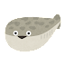

特徴と魅力

サカバンバスピス
2023年春、「あまりに情けない顔をしている魚」として復元模型がツイッターで話題になったことで一躍時の魚に。
うきうきなAI
CHAT GPTが2023年夏に、人間より、優秀だとSNSで一気に話題となり、大学生達の間でレポートを書かせるなどして引っ張りだこに…。
退職を言い渡された青い鳥
2023年夏、イーロン・マスクの方針でtwitterの看板を引きずり降ろされた鳥。今後はXがTwitterの看板になり、今後の展開に注目が集まる。
蛙化現象
2023年春、高校生の流行語第1位に選ばれたほか、人気youtuberが取り上げたり、テーマソングができるなどして話題に。
上記のイラストのように、話題になった事象やことがらも、いらすとやでは常に更新され続け、イラストになっている。これからの世間のトレンドがどのようにいらすとやに反映されていくか今後にも注目していきたい。